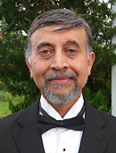
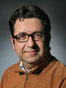

Participants
Keynote Speakers

Nitish V. Thakor
Professor Nitish V. Thakor is currently a professor in the department of biomedical engineering, Johns Hopkins University, and the provost professor in the department of Electrical & Computer Engineering, The National University of Singapore. He served on the faculty of Electrical Engineering and Computer Science of the Northwestern University from 1981 to 1983, and since then he has been with the Johns Hopkins University, School of Medicine, where he is currently serving as a Professor of Biomedical Engineering. He conducts research on neurological instrumentation, biomedical signal processing, micro and nanotechnologies, neural prosthesis, clinical applications of neural and rehabilitation technologies and brain-machine interface. He has authored more than 250 peer-reviewed publications on these subjects. He was the Editor in Chief of IEEE Transactions on Neural and Rehabilitation Engineering and presently of the Medical and Biological Engineering and Computing journal. He is a fellow of IEEE, BMES, AIMBE, IFMBE.
Cuntai Guan
Professor Cuntai Guan is currently a Professor in the School of Computer Science and Engineering, Nanyang Technological University (NTU), Singapore. He is the Co-Director of the NTU-NNI Neuro-technology Fellowship Program. He serves in the Advisory Board of the Elite Master Program in Neuroengineering at the Technical University of Munich (TUM). He also serves as Chief Scientist in Neeuro Pte Ltd. He is a Member of the National Medical Research Council Open Fund IRG Review Panel, Singapore. He was the co-Director of Rehabilitation Research Institute of Singapore (RRIS) from 2015-2018. He was the founding Department Head of Neural & Biomedical Technology Department and a Principal Scientist (RSE6) at the Institute for Infocomm Research (I2R), A*SATR, Singapore. He had served as Chairman of IEEE Engineering in Medicine and Biology Chapter as well as President of the Pattern Recognition and Machine Intelligence Association (PREMIA). He had served as Conference Chair, Co-Chair, Track Chair and Associate Editor of conferences and symposiums. He is an Associate Editor of IEEE Transactions on Biomedical Engineering, Brain-Computer Interfaces, Frontiers in Neuroscience, and IEEE Access. He is a Fellow of IEEE.

Silvestro Micera
Professor Silvestro Micera is now full Professor and Head of the Translational Neural Engineering Laboratory at the Swiss Federal Institute of Technology Lausanne (EPFL). He received the University degree (Laurea) in Electrical Engineering from the University of Pisa, in 1996, and the Ph.D. degree in Biomedical Engineering from the Scuola Superiore Sant'Anna, in 2000. From 2000 to 2009, he has been an Assistant Professor of BioRobotics at the Scuola Superiore Sant'Anna where he is now the Head of the Neural Engineering group. In 2007 he was a Visiting Scientist at the Massachusetts Institute of Technology, Cambridge, USA with a Fulbright Scholarship. From 2008 to 2011 he was the Head of the Neuroprosthesis Control group and an Adjunct Assistant Professor at the Institute for Automation, Swiss Federal Institute of Technology, Zurich, CH. In 2009 he was the recipient of the "Early Career Achievement Award of the IEEE Engineering in Medicine and Biology Society". He is now full Professor and Head of the Translational Neural Engineering Laboratory at the Swiss Federal Institute of Technology Lausanne (EPFL), CH. He is currently Associate Editor of IEEE Transactions on Biomedical Engineering and of IEEE Transactions on Neural Systems and Rehabilitation Engineering. He is also a member of the Editorial Board of the Journal of Neuroengineering and Rehabilitation and Deputy Editor in Chief of the IEEE EMB Magazine Pulse.
Invited Speakers
Dong Song
University of Southern California, USA
Ning Jiang
University of Waterloo, Canada
Chang-Hwan Im
Hanyang University, South Korea
Sung-Phil Kim
Ulsan National Institute of Science and Technology, South Korea
Zhuliang Yu
Southern China University of Technology, China
Kedi Xu
Zhejiang University, China
Rosa Chen
City University of Hong Kong, Hong Kong
Yu Hu
Hong Kong University of Science and Technology, Hong Kong
Xiaoling Hu
Hong Kong Polytechnic University, Hong Kong
Peng Shi
City University of Hong Kong, Hong Kong